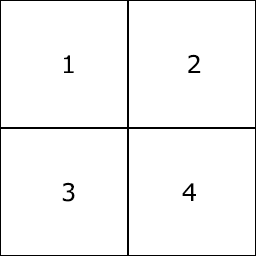

Basic Render Settings¶
Overview¶
This section explains about the "Basic Render Settings" window, which provides common parameters that manipulate how the current node's particles are drawn.
Parameter¶

"Basic Render Settings" window
Material¶
Specifies the material used to draw the particles. You can make settings such as being lighten or distorting the background.
Default¶
The image in the color image is displayed.
Lighting¶
Particles are lightened. In addition to color images, you can specify normal images. If you specify a normal image, the orientation of the surface is changed.
Distortion(Back)¶
If the distortion setting is enabled, the particles will distort anything behind it. The way the distortion is applied depends on the pixel data of the distorted image, and the distortion intensity.
In the color of the distortion image, red and green channels are used as distortion information. Both of them do not distort at all when the value is 127. When red is 127 or more, it is distorted to the right, and when it is less than 127 it distorts to the left. When green is 127 or more, distortion is in the upward direction and distortion is in the downward direction when the green is less than 127. However, this up / down / left / right direction depends on the drawing method. For example, in the case of a sprite, the top, bottom, left, and right directions are those perpindicular to the sides of the image's rectangle.
The color of each drawing weakens the strength of distortion. Values range between 0 and 255. Red affects left and right, and green affects up and down.
Distortion strength adjusts the strength of all colors. When it reaches 0, no more distortion will be applied.
With distortion | No distortion |
 |
In the case of the default settings, the distortion distorts only the background without own effect itself. To distort other nodes of own effect with distortion, specify the drawing priority from the depth panel. Nodes with drawing priority less than 0 are distorted with the background due to the distortion of the node of own effect.
File¶
You can use a user-created material file for drawing particles. The widest range of expressions can be achieved.
Press the button to create and edit material files.
See the reference about Material for details.
More parameters may be emerging depends on the material file. In addition to constants, custom parameters can be specified by easing or F-curve. The displayed name of the custom parameter depends on the material file.
Cache¶
To speed up material loading or to play the effect on certain platforms, you can save the material as a compiled format.
To generate that file, press Generate Cache after loading the material.
If the generated cache is placed in the same directory as the material file, loading will be faster. On some platforms, effects cannot be played without using cache. A cache that can be used on both Windows and Mac is generated by generating the cache on Mac after generating the cache on Windows.
Emmisive Scaling¶
It multiplies the particle's color by the specified value. The higher the value, the brighter the color. When the value is 1, the image will be used as is. Only available when the material is Standard or Lighting. In environments other than those that support HDR, increasing the value may result in strange colors.

Blend¶
Specifies the method of alpha blending applied when displaying the particle. This controls how drawn images will be composited when they are on top of each other, such as translucency, addition, or subtraction.

Filter¶
Specify the filtering method to be applied when displaying the particle.
Depth Set¶
Specify whether to write depth information when displaying particles. After writing the depth information, if you draw the particles for which the depth test is enabled, if the particles are deep inside, they will not be drawn.
Depth Test¶
If the depth test is valid, particles will not be drawn deeper than the written depth information.
Fade-In¶
When a particle is first spawned, it fades in over a duration until fully visible.
Fade-Out¶
When a particle is about to be despawned, it fades out over a duration and disappears.
UV¶
In an image, this specifies the region of the image actually used when displaying the particle. The region can be changed over time, allowing you to scroll or animate the image. The units used in these parameters for specifying the area are pixels.
Animation¶
Play animation based on images with animations arranged in succession.

Start time¶
Specify the time of animation to start playing. For example, you can play from the second piece with animation composed of 4 images.
Flip Frame BlendType¶
None
It switches the position to be displayed at regular intervals.
Lerp
It uses linear completion for animation transitions. This will ensure that the image does not change suddenly.
Scroll¶
Move the UV range at a constant speed.

F-Curve¶
Use the F-Curve window to control the UV by defining automation curves.
Referenced(UV)¶
Multiple images with different sizes may be used for one particle. In that case, you can specify a resolution used as the basis of the ratio with an image. You can also specify the UV based on 128x128 without specifying the image.
When using a material, the number of Referenced matches the material a priority of image.

Inherit color¶
Specify whether the color of the parent particle affects the color of the child's particles. In case of inheritance of color, the color of the parent's particle multiplied by the color of the child's particle becomes the color of the final child's particle. When "Only on create" is selected, the color of the parent particle when the child particles are generated is always applied.
Never | Only on create | Always |
 |  |  |